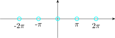

9.2 Singularities and Zeroes
Definition:
A point \(z_0\) is called a singularity of a complex function \(f(z)\) if \(f(z)\) is not analytic at \(z_0\) but is such that every
neighbourhood of \(z_0\) contains at least one point at which \(f(z)\) is analytic.
Definition
A function \(f(z)\) is said to have an isolated singularity at \(z_0\) if it is analytic in the punctured disk \(0 < \left |z - z_0\right | < R\) for some \(R>0\)
but not analytic at \(z_0\).
Examples:
The singularities of \(f(z) = \dfrac {1}{1 - z^2}\) and \(g(z) = \dfrac {1}{\sin z}\) are isolated.


Consider the function \(f(z) = \ln z\). All the singularities for \(f(z)\) on the real negative real axis are non
isolated.
Classification of Singularities
Let \(f(z)\) have an isolated singularity at some point \(z_0\) at which point it has a Laurent series
expansion.
\[f(z) = \sum ^{\infty }_{n = -\infty } a_n ( z-z_0)^n\hspace {0.2cm}, \hspace {0.3cm}\text {which converges }\hspace {0.2cm}0 < \left |z - z_0\right | < R\]
then
- 1.
- An isolated singularity of \(f(z)\) at \(z_0\) is called a removable singularity if the principal part of the Laurent series expansion of \(f(z)\) about \(z_0\) is identically zero. i.e \(a_n = 0,\hspace {0.2cm}\) for \(n = -1, -2, \cdots \cdots \) and \(\displaystyle {f(z) = \sum ^{\infty }_{n = 0}a_n (z - z_0)^n\hspace {0.4cm} 0 < \left |z - z_0\right | } < R\)
- 2.
- An isolated singularity of \(f(z)\) at \(z_0\) is called pole of order \(k\) if the principal part of the Laurent series expansion about \(z_0\) contains only a finite number of terms forming a polynomial of order \(k\) in \((z - z_0)^{-1}\). In this case, we have \[f(z) = \frac {C_{-k}}{(z - z_0)^k} + \frac {C_{-(k-1)}}{(z - z_0)^{k-1}} + \cdots \cdots + \frac {C_{-1}}{(z - z_0)} + \sum ^{\infty }_{n = 0}a_n\hspace {0.1cm}(z - z_0)^n\] with \(C_{-k}\neq 0\hspace {0.2cm},\hspace {0.3cm} 0 < \left |z - z_0\right | < R\)
- 3.
- An isolated singularity of \(f(z)\) at \(z_0\) is called essential singularity if the principal part of the Laurent series expansion of \(f(z)\) about \(z_0\) is an infinite series in \((z - z_0)^{-1}\)
So that \(a_{-n}\neq 0\) for infinitely many positive integers \(n\).
Removable Singularities
When \(z_0\) is a removable singularity of \(f(z)\), the function is not defined at \(z_0\) and the annular domain of
convergence is \(0 < \left |z - z_0\right | < R\). By definition of a removable singularity, \(\hspace {0.1cm}\lim \limits _{z\rightarrow z_0}f(z)\) exist and is finite, so defining
\(\hspace {0.3cm} \boxed {f(z_0) = \lim \limits _{z \rightarrow z_0} f(z) = \text {finite}}\)
Example
- 1.
- Consider \(f(z) = \dfrac {\sin z}{z}\hspace {0.2cm},\hspace {0.2cm}f(z)\) has a singularity at \(z = 0\). The Question is it removable?
Note that \(\hspace {0.2cm} \lim \limits _{z\rightarrow 0} f(z) = \lim \limits _{z\rightarrow 0} \dfrac {\sin z}{z} = 1\)
Hence it is a removable finite singularity. \begin {align*} f(z) & = \dfrac {\sin z}{z} = \dfrac {z - \dfrac {z^3}{3!} + \cdots \cdots \cdots }{z}\\\\ & = 1 - \dfrac {z^2}{3!} + \dfrac {z^4}{5!} + \cdots \cdots \cdots \end {align*}
- 2.
- Consider \(g(z) = \dfrac {1 - \cos (z - 1)}{(z - 1)^2}\)
\(g(z)\) has isolated singularity \( z = 1\)
Is it removable?
\begin {align*} \lim \limits _{z\rightarrow 1} f(z) & = \lim \limits _{z\rightarrow 1}\dfrac {1 - \cos (z - 1)}{(z - 1)^2}\\\\ & = \lim \limits _{z\rightarrow 1}\dfrac {\sin (z - 1)}{2(z - 1)}= \lim \limits _{z\rightarrow 1}\frac {\cos (z - 1)}{2}\\\\ & = \dfrac {1}{2}\hspace {0.3cm}\text {is a removable singularity at }\hspace {0.3cm} z = 1\\ \end {align*}
\begin {align*} \text {OR}\hspace {1cm} g(z) & = \dfrac {1 - \cos (z - 1)}{( z - 1)^2}\\\\ & = \dfrac {1 - \Big [1 - \dfrac {(z - 1)^2}{2!} + \dfrac {(z - 1)^4}{4!}+ \cdots \cdots \cdots \Big ]}{(z - 1)^2}\\\\ & = \dfrac {1}{2!} - \dfrac {(z - 1)^2}{4!} + \dfrac {(z - 1)^6}{6!}+ \cdots \cdots \cdots \\\\ \end {align*}
Poles
If \(f(z)\) has a pole at \(z_0\), then \(\hspace {0.3cm}\lim \limits _{z\rightarrow z_0}f(z) = \infty \).
Example
- 1.
- \(f(z) = \dfrac {1}{z}\hspace {0.2cm},\hspace {0.2cm}\) singularity at \(z = 0\)
\(\lim \limits _{z\rightarrow 0} f(z) = \lim \limits _{z\rightarrow 0}\dfrac {1}{z} = \infty \)
- 2.
- \(g(z) = \dfrac {\cos z}{z}\hspace {0.2cm},\hspace {0.2cm}\) singularity is at \(z = 0\)
\(\displaystyle {\lim \limits _{z \rightarrow 0} g(z) = \lim \limits _{z \rightarrow 0}\dfrac {\cos z}{z} = \infty }\hspace {0.1cm},\hspace {0.2cm}\) thus \(g(z)\) has a pole at \(z = 0\).
\begin {align*} \text {OR}\hspace {1cm} g(z) & = \dfrac {1 - \dfrac {z^2}{2!} + \dfrac {z^4}{4!} - \dfrac {z^6}{6!} + \cdots \cdots }{z}\\\\ & = \dfrac {1}{z} - \dfrac {z}{2!} + \dfrac {z^3}{4!}+ \cdots \cdots \cdots \end {align*}
indeed \(z = 0\) is a simple pole for \(g(z) = \dfrac {\cos z}{z}\)
Exercise:
Find the nature of the singularity for \(\hspace {0.2cm} g(z) = \dfrac {e^z}{z^3}\).
Test For a Pole of Order \(k\) at \(z_0\)
If \(f(z)\) has a pole of order \(k\) at \(z_0\), then \(\hspace {0.2cm}\boxed { \lim \limits _{z \rightarrow z_0} (z - z_0)^k f(z) = L\neq 0}\)
Example
- 1.
- Consider \(f(z) = \dfrac {1}{(z + 1)^2 \sin (z + 1)}\hspace {0.2cm}\) has singularities at \(z = -1\) and \(z = n \pi - 1, \hspace {0.2cm} n\in \mathbb {Z}\) \begin {align*} \lim \limits _{z\rightarrow -1} \big (z - (-1)\big )^3 f(z) & = \lim \limits _{z\rightarrow -1} \dfrac {z + 1}{\sin (z + 1)}\\\\ & = \lim \limits _{z\rightarrow -1}\dfrac {1}{\cos (z + 1)}\\\\ & = 1 \end {align*}
So that \(z = -1\) is a pole of order \(3\).
\begin {align*} \lim _{z\rightarrow n\pi - 1} \big ( z - (n\pi - 1)\big ) f(z) & = \lim _{z\rightarrow n\pi - 1}\dfrac {z - n\pi + 1}{(z + 1)^2\sin (z + 1)}\\\\ & = \dfrac {1}{n^2\pi ^2}\hspace {0.1cm}\lim _{z\rightarrow n\pi - 1}\dfrac {z - n\pi + 1}{\sin (z + 1)}\\\\ & = \pm \dfrac {1}{n^2\pi ^2}\neq 0 \end {align*}
So that the poles \(z = n\pi - 1, \hspace {0.2cm} n\neq 0\) are all simple.
Essential Singularities
The remaining case is the interesting one. At a removable singularity \(f\) settles down to a finite value,
and at a pole \(\left |f(z)\right | \rightarrow \infty \). At an essential singularity neither happens — and what happens instead is far stranger
than either.
Example
Let \(f(z) = e^{1/z}\), which has an essential singularity at \(z = 0\) since
\[e^{1/z} = \sum ^{\infty }_{n = 0}\dfrac {1}{n!}\,z^{-n} = 1 + \dfrac {1}{z} + \dfrac {1}{2!\,z^2} + \cdots \]
has infinitely many terms in its principal part. Approach \(0\) along three different routes:
- (i).
- along the positive real axis, \(z = x \rightarrow 0^{+}\), we get \(e^{1/x} \rightarrow +\infty \);
- (ii).
- along the negative real axis, \(z = x \rightarrow 0^{-}\), we get \(e^{1/x} \rightarrow 0\);
- (iii).
- along the imaginary axis, \(z = iy\), we get \(e^{-i/y}\), which has modulus \(1\) for every \(y\) and simply runs round the unit circle for ever without settling anywhere.
So \(\lim \limits _{z \rightarrow 0} f(z)\) fails to exist in the strongest possible way: the function takes wildly different values in every neighbourhood of \(0\), however small.
The following theorem says that this is not an accident of the example but the universal behaviour at an essential singularity.
Theorem: the Casorati–Weierstrass Theorem
Let \(f\) have an essential singularity at \(z_0\). Then for every \(\delta > 0\) the image of the punctured disc
\[\{ z : 0 < \left |z - z_0\right | < \delta \}\]
under \(f\) is dense in \(\mathbb {C}\). Equivalently: for every \(w \in \mathbb {C}\) and every \(\varepsilon > 0\) there is a point \(z\) with \(0 < \left |z - z_0\right | < \delta \) and \(\left |f(z) - w\right | < \varepsilon \).
In words: arbitrarily close to an essential singularity, \(f\) comes arbitrarily close to every complex number.
Proof
Suppose not. Then there exist \(w \in \mathbb {C}\), \(\varepsilon > 0\) and \(\delta > 0\) such that
\[\left |f(z) - w\right | \geq \varepsilon \hspace {0.5cm} \text {for all } z \text { with } 0 < \left |z - z_0\right | < \delta .\]
Define, on that punctured disc,
\[g(z) = \dfrac {1}{f(z) - w}.\]
The denominator never vanishes there, so \(g\) is analytic on the punctured disc, and by the assumed
bound
\[\left |g(z)\right | = \dfrac {1}{\left |f(z) - w\right |} \leq \dfrac {1}{\varepsilon },\]
so \(g\) is bounded. A bounded analytic function on a punctured disc has a removable singularity at the
centre, so \(g\) extends analytically over \(z_0\). Two cases remain.
If \(g(z_0) \neq 0\), then \(\dfrac {1}{g}\) is analytic at \(z_0\), and \[f(z) = w + \dfrac {1}{g(z)}\] is analytic at \(z_0\) too — so \(z_0\) was a removable singularity of \(f\), not an essential one.
If \(g(z_0) = 0\), let \(k \geq 1\) be the order of that zero. Then \(\dfrac {1}{g}\) has a pole of order \(k\) at \(z_0\), and so does \(f = w + \dfrac {1}{g}\) — so \(z_0\) was a pole of \(f\), not an essential singularity.
Either way the assumption contradicts \(z_0\) being essential. \(\blacksquare \)
Note
Casorati–Weierstrass says \(f\) comes arbitrarily close to every value. Picard’s Great Theorem, which is
harder and is not proved here, says something much stronger: near an essential singularity \(f\)
actually attains every complex value, with at most one exception, and attains each of
them infinitely often. For \(e^{1/z}\) near \(0\) the single exceptional value is \(0\), which \(e^{1/z}\) never takes —
consistent with route (ii) above, where the function merely tends to \(0\) without ever reaching
it.
Summary: the three isolated singularities
Let \(z_0\) be an isolated singularity of \(f\). Exactly one of the following holds, and each row characterises its
case completely.
- (i).
- Removable: \(f\) is bounded near \(z_0\); equivalently \(\lim \limits _{z \rightarrow z_0} f(z)\) exists and is finite; equivalently the principal part vanishes.
- (ii).
- Pole of order \(k\): \(\left |f(z)\right | \rightarrow \infty \) as \(z \rightarrow z_0\); equivalently the principal part has finitely many terms, the last being \((z - z_0)^{-k}\); equivalently \((z - z_0)^k f(z)\) has a removable singularity with non-zero limit.
- (iii).
- Essential: neither of the above; equivalently the principal part has infinitely many terms; equivalently \(f\) takes values dense in \(\mathbb {C}\) in every neighbourhood of \(z_0\).
That the boundedness condition in (i) is enough — with no assumption on the limit — is Riemann’s removable singularity theorem, and it is the fact the proof above leaned on.
Zeroes of Function
Definition:
A function \(f(z)\) has a zero at \(z_0\) or order \(k\) if \(f(z) = (z - z_0)^kg(z)\) with \(g(z_0)\neq 0\).
Definition:
A function \(f(z)\) is said to be meromorphic in some domain \(D\) if it can be expressed in the form \(f(z) = \dfrac {g(z)}{h(z)}\hspace {0.1cm}\) where \(g(z), h(z)\) are
analytic in \(D\) with \(h(z)\neq 0\).
Questions on this section
Stuck on something here? Ask below and it stays attached to this topic.